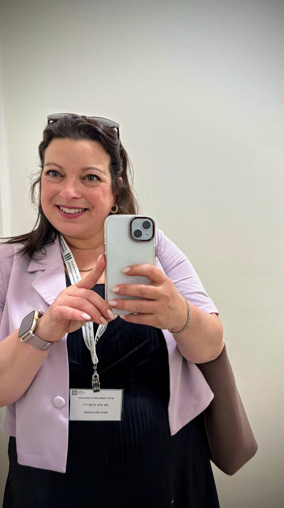

ברוכות וברוכים הבאים
מרצה, ביואתיקאית ויועצת אתית
החוג לניהול מערכות בריאות
המכללה האקדמית עמק יזרעאל ע״ש מקס שטרן, ישראל
חוקרת את הגבולות האתיים של רפואת פריון, בינה מלאכותית בבריאות ומדיניות בריאות — במפגש שבין מדע, משפט וערכים אנושיים.
אני מרצה בחוג לניהול מערכות בריאות במכללה האקדמית עמק יזרעאל ע״ש מקס שטרן, שם אני מלמדת קורסים בביואתיקה, מערכות בריאות ומדיניות בריאות.
אני בעלת דוקטורט בפילוסופיה מאוניברסיטת בר־אילן. עבודת הדוקטורט שלי עסקה בזכות להורות באמצעות טכנולוגיות פריון.
בין השנים 2020–2023 הייתי חוקרת אורחת בבית הספר לבריאות הציבור באוניברסיטת מונטריאול, בהנחיית פרופ׳ ורדית רביצקי. במסגרת זו העמקתי במחקר השוואתי בתחום אתיקת הפריון ומדיניות בריאות בהקשרים משפטיים, תרבותיים וחברתיים שונים.
מעבר לעבודתי האקדמית, אני משמשת כיועצת אתית במרכז הרפואי כרמל וכחברה בוועדת האתיקה של מכבי שירותי בריאות. עבודתי משלבת ידע אקדמי בביואתיקה עם התמודדות מעשית עם סוגיות קליניות, מוסדיות וחברתיות.
מחקריי הוצגו בכנסים ובמסגרות אקדמיות מובילות בארץ ובעולם, ובהן הקונגרס העולמי לביואתיקה, Oxford–Mount Sinai Consortium on Bioethics והמכון לאתיקה ביו־רפואית באוניברסיטת ציריך.
עבודתי נמצאת במפגש שבין ביואתיקה, משפט רפואי, מדיניות בריאות וטכנולוגיות רפואיות מתקדמות.
סוגיות אתיות, משפטיות וחברתיות בטיפולי IVF, פונדקאות, תרומת גמטות, שימור פוריות והזכות להורות.
ההשלכות האתיות של שימוש בבינה מלאכותית ובנתוני עתק ברפואה, בדגש על רפואת פריון, פרטיות ואחריות אלגוריתמית.
מדיניות בריאות בישראל ובעולם, מימון ציבורי של טיפולי פוריות, סדרי עדיפויות במערכת הבריאות והתמודדות עם מצבי משבר.
זכויות מטופלים, אוטונומיה, פטרנליזם רפואי, ייעוץ אתי בבתי חולים ואתיקה חיובית ככלי ניהולי.
דילמות אתיות במגפות, מעקב ממשלתי, מדיניות חיסונים והאיזון בין זכויות הפרט לבין צורכי בריאות הציבור.
סוגיות אתיות באבחון טרום־לידתי, טכנולוגיות גנומיות בהריון, והחלטות רפואיות וחברתיות בתחילת החיים.
מחקרים וכתבי יד הנמצאים בשלבי הכנה.
מחקר העוסק במדיניות, אתיקה והימנעות מהגבלות יתר על טיפולי פוריות בתקופות של מגפה ומלחמה בישראל.
ניתוח השוואתי של היבטים רגולטוריים, אתיים וחברתיים של ביובנקים במספר מדינות.
מחקר העוסק בהשפעת פינוי ואיומים ביטחוניים על בריאותן הנפשית של נשים בהריון בישראל.
דיון בפוטנציאל הרפואי ובשאלות האתיות של שימוש בבינה מלאכותית ברפואת פריון.
שמות המאמרים והרשימה הביבליוגרפית נשארים באנגלית. לרשימה מלאה ניתן להיכנס אל Google Scholar.
Golan, O., Satran, C., & Bord, S. (2025). An individual's trust in government is a major determinant in the decision to voluntarily join a public health initiative. Israel Journal of Health Policy Research, 14(1), 1–11.
DOI →Alon, I., Cassou, M., Golan, O. C., & Ravitsky, V. (2024). Mapping ethical, legal, and social implications (ELSI) of gamete donation. Journal of Assisted Reproduction and Genetics.
DOI →Alon, I., Bussod, I., Golan, O. C., & Ravitsky, V. (2024). Mapping ethical, legal, and social implications (ELSI) of fertility preservation. Journal of Assisted Reproduction and Genetics, 41(9), 2495–2514.
DOI →Golan, O. (2015). The right to parenthood as derived from the right to health. Medical Law and Bioethics, 6, 74–103. [Hebrew]
Buchs, A. E., Kalter-Leibovici, O., Gorelik, O., Cohen, N., Golan, O., & Rapoport, M. J. (2010). Comparison of modified preadmission glucose-lowering regimen with basal/bolus regimen for glucose control on outcome in general medicine wards. International Journal of Clinical Practice, 64(13), 1802–1807.
DOI →Golan, O. (2017). The Right to Parenthood through Fertility Technologies. Published Doctoral Dissertation [Hebrew]. Bar-Ilan University. Supervisor: Prof. Noam Zohar.
אני מלמדת במוסדות אקדמיים בישראל בתחומי ביואתיקה, מערכות בריאות, מדיניות בריאות ואתיקה רפואית.
| קורס | רמה | סוג | שנים |
|---|---|---|---|
| תכנון וכתיבת ניירות מדיניות בריאות | תואר שני | חובה | 2022–היום |
| מערכות בריאות בישראל ובעולם | תואר ראשון | חובה | 2021–היום |
| מדיניות בריאות בישראל | תואר ראשון | סמינר | 2019–היום |
| אתיקה של טכנולוגיות מתקדמות | תואר ראשון | בחירה | 2019–היום |
| אתיקה במערכת הבריאות | תואר ראשון | חובה | 2015–היום |
מבחר הרצאות והצגות בכנסים בישראל ובעולם.
פוטנציאל רפואי ושיקולים אתיים
17th World Conference in Bioethics, Medical Ethics and Health Law · Ljubljana, Slovenia
מבט ישראלי ובינלאומי
41st Annual Conference of the Association for Israel Studies · University of Haifa
Institute for Biomedical Ethics · University of Zurich
השלכות אתיות ומדיניות
17th World Congress of Bioethics · Doha, Qatar
ניתן לפנות אליי בנושאי הרצאות לקהל הרחב, שיתופי פעולה אקדמיים, ייעוץ אתי, פניות תקשורתיות ופניות מקצועיות.
+972 54-7540948
החוג לניהול מערכות בריאות
המכללה האקדמית עמק יזרעאל ע״ש מקס שטרן
טלפון: 04-6423581
הרצאות בנושאי אתיקה רפואית, בינה מלאכותית בבריאות, רפואת פריון, מדיניות בריאות וזכויות מטופלים.